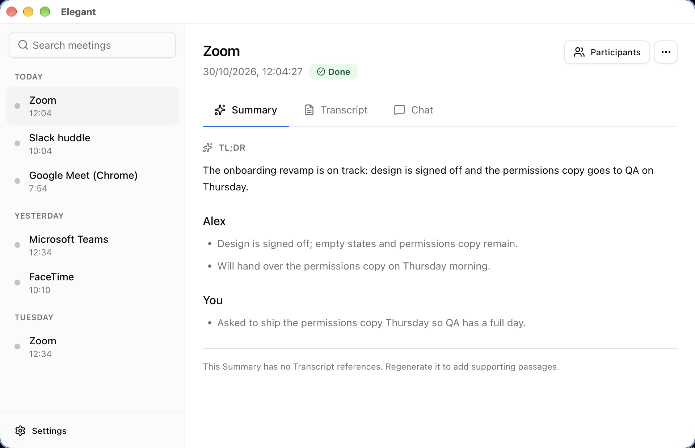
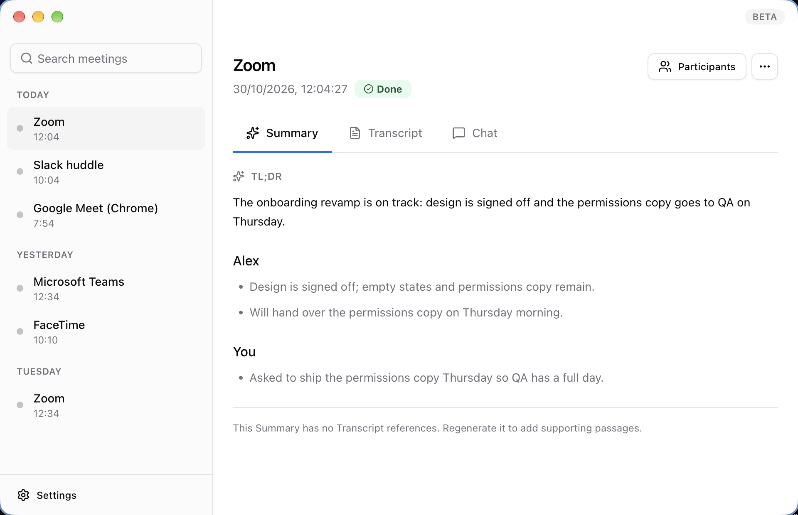
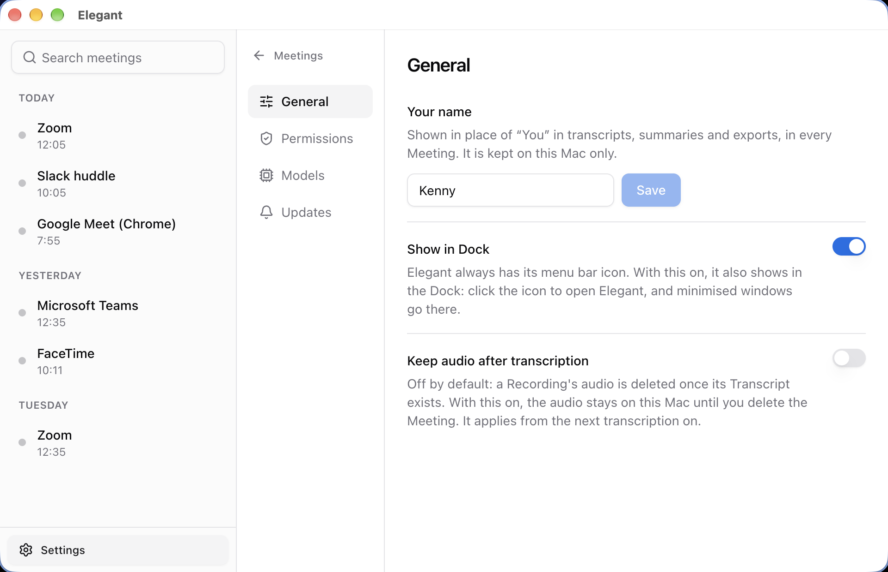
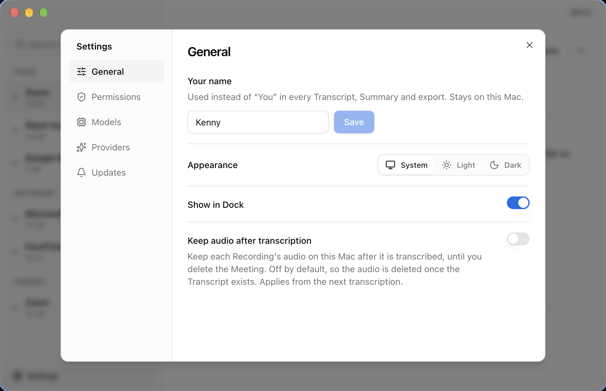
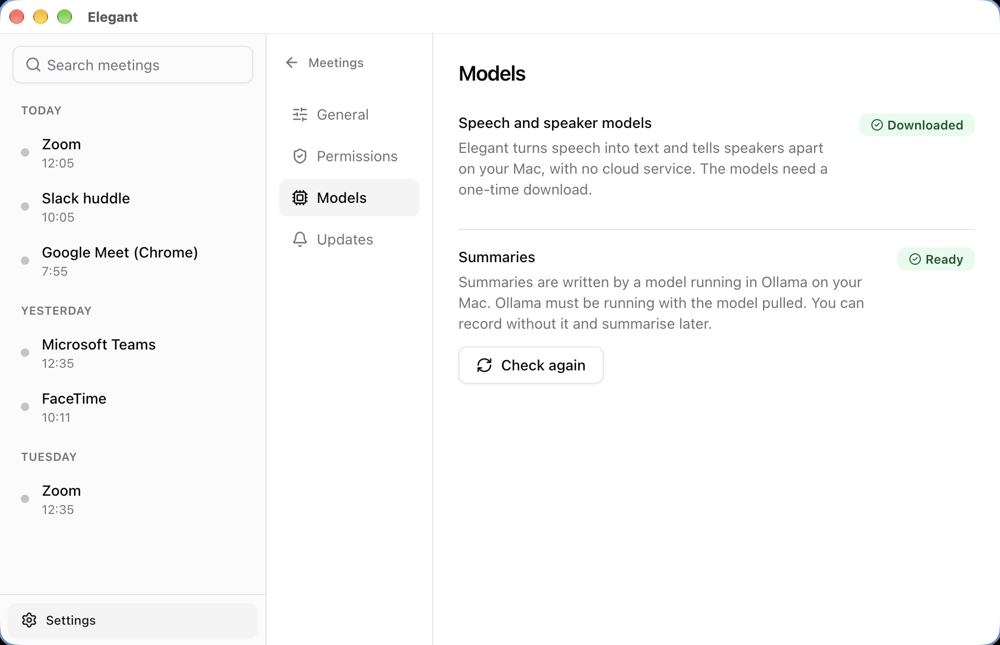
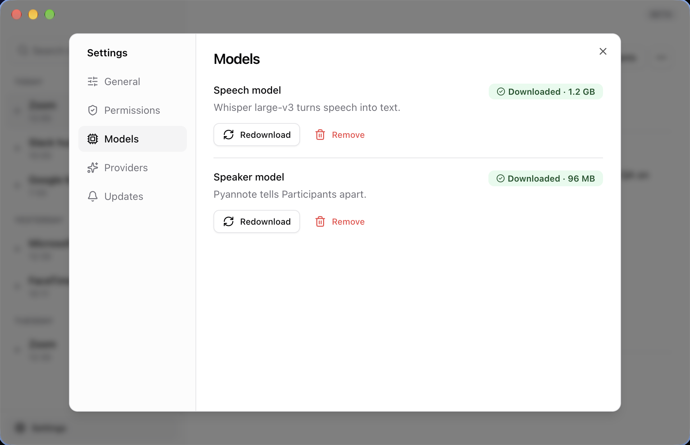
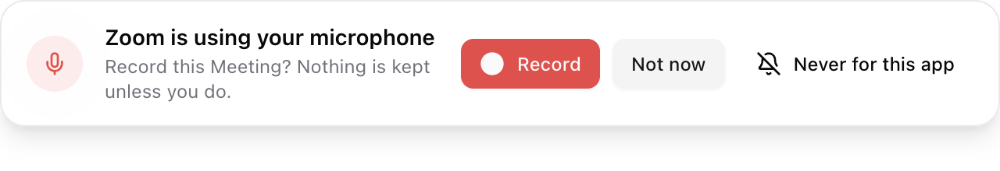
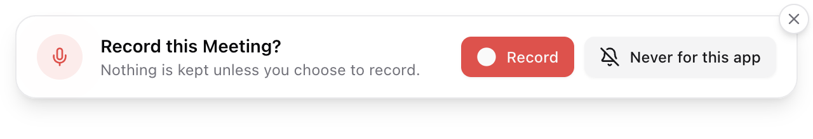
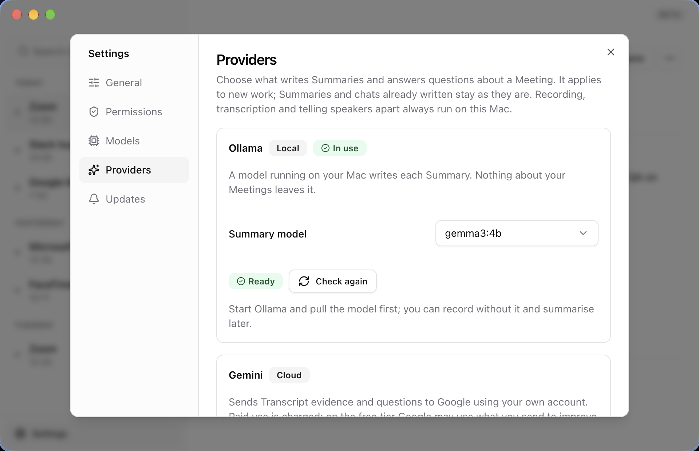

Elegant · changelog
30 October 2026: Gemini as an option, Settings as a modal, a Prompt that waits for you
Seven pull requests merged into main today and shipped as v0.1.3, the first release with in-app updates. Ollama is still the default. Nothing here sends anything to the cloud unless you choose it in Settings.
Optional Gemini for Summaries and Meeting Chat, a Providers tab, an Appearance setting, model management.
The Prompt waits for an answer. TL;DRs lead with decisions and commitments. Clearer Gemini errors.
A TL;DR over 90 words is recovered, not rejected. The Dock no longer lists the window as "Meetings".
Settings is a modal. A transparent title strip with a Beta label. A close button on the Prompt and on every toast.
What changed
Each item below was checked against its commits or the docs they changed.
Optional Gemini processing #71
Summaries and Meeting Chat can run on Gemini with your own API key. The key is stored with Electron's OS-backed encryption and never reaches the renderer. You must accept a consent step, and there is no fallback between providers. Audio, transcription and speaker detection stay on your Mac. See ADR 0003.
Providers tab #74
One card per provider. Ollama (local) holds the Summary model picker and its readiness check. Gemini (cloud) holds the key, model, connection test and consent.
Gemini model list and "Find usable models" #74
Once a key is saved, the model picker is filled from Google's models endpoint. Because Google lists models your plan cannot use, "Find usable models" sends each a tiny synthetic request, with progress and a Stop button, and keeps only the ones that answer. No Meeting content is ever sent for either.
Appearance: System, Light or Dark #72
Applies to every window, the Prompt included.
Summary model picker for Ollama #72
Lists the models you have pulled.
gemma3:4bis the default and the only one that has passed the evaluation gates; any other is flagged as untested.Speech and speaker models, with Remove and Redownload #72
Each model shows its size on disk. Both actions ask first and are refused while a download, a Recording or AI work is running.
Elegant logos and a Beta label #72
The app, Dock and menu bar use the Elegant logo. The menu-bar title still shows elapsed time while recording.
The Prompt stays until you answer #72
No timeout, and clicking elsewhere does not dismiss it. Closing it discards the buffered audio, and Elegant will not ask about that app again until it releases the microphone.
TL;DRs lead with what matters #65 · #73
The overview reserves space for explicit final decisions, then first-person commitments, then updates and open questions. Earlier proposals rank lower but stay in each Participant's points.
Gemini quota errors say why #74
A 429 now names the quota, the model and the retry delay, and says when the limit is zero because the model is not on your plan.
Gemini setup checked against Google's docs #74
The connection test allows 2,048 output tokens because thinking tokens count against the cap. The consent text now says that on the free tier Google may use what you send to improve its products.
Tighter Settings copy and toast confirmations #72 · #74
Descriptions say what the setting does first. Saved keys and passed tests appear as toasts; a failed change stays as an alert until fixed.
A TL;DR over 90 words no longer fails #65
Three valid 57-word points produced a 171-word overview that the app rejected. It now packs whole supported sentences inside three sentences and 90 words, and keeps main updates and who said what.
The Dock no longer lists the window as "Meetings" #72
The page's own title was replacing the window title. The Meetings and onboarding windows now keep the app's name.
Settings is a modal
It opens over the Meetings window, which blurs behind it. The close button, Esc or a click outside closes it, and your open Meeting stays put.
A transparent title strip
The traffic lights sit inside the window. The strip no longer shows the app's name; a Beta label sits at its right edge.
Close buttons
On the Prompt, as a badge on its corner, and on every toast.
Settings sections
General, Permissions, Models, Providers, Updates. The Summary model picker moved to Providers, and the default model is no longer labelled "(tested)".
Previous UI and Updated UI
"Previous UI" is main right after #67 and #68 merged at 10:41 IST. "Updated UI" is the same app with the day's work on top. Both use the same made-up Meeting data and were rendered from the built app windows, so no real people or Meetings appear.
UI The window's top edge
The native title bar is replaced by a transparent strip you can drag. It no longer repeats the app's name, and it carries a Beta label. The window now reads as one surface, with the sidebar and the Meeting starting just below the strip.


UI New Settings, General
Settings stops replacing the Meeting and floats over it. You can look something up in Settings and land back on the Meeting you were reading. Appearance is new, and settings that explain themselves no longer carry a description.


UI New Settings, Models
Models now covers only what runs on your Mac for transcription. You can see how much space each model takes, and remove it or fetch it again without leaving the app.


Improved UI The Prompt
The Prompt used to give up after a timeout and offered a Not now button. It now waits for you, and the close badge on its corner replaces Not now. Esc closes it too.


New Settings, Providers
This tab is new, so there is no Previous UI. Ollama and Gemini each get a card. The one in use is marked, and the Gemini card (scrolled out of view here) holds the key, model, connection test and consent.

What it means for you
User impact
- Local use is unchanged. Ollama stays the default and a Summary you already have is not rewritten if you change provider.
- Gemini sends Transcript evidence and questions to Google. You opt in once, in Settings. Audio is never uploaded.
- The Prompt waits. You answer or close it; it will not time out while you are busy.
- Settings keeps your place. The Meeting you were reading is still there when you close it.
- 0.1.3 is the first release with in-app updates. Getting to it is a manual download; after that the app updates itself.
Checks completed
- Passed
pnpm run typecheckonmainat4d07793, the commitv0.1.3points to. - Passed
pnpm exec vitest run: 53 files, 791 tests. The four real-engine tests ran against an existing local engine build. - Not run: the full
pnpm test, so the Swift engine's own tests were skipped. - Screenshots were captured from the built renderer in Electron, not from the packaged app.
Known issues
- Gemini has not been tried with a live key. Google's docs were read, not exercised. A passing "Test Gemini connection" is the real check. Quality and latency against Ollama are still unmeasured.
- Keychain behaviour is unverified on a signed Mac app: save, replace, remove, relaunch, and a locked keychain.
- Google calls
generateContentlegacy but supported. Elegant stays on it for now. - "Find usable models" spends a little of each model's quota.
gemini-4-argonis paid only. - TL;DR ranking uses narrow English cues. Three sentences can still leave out a detail; each Participant's points keep everything.
- Only
gemma3:4bhas passed the evaluation gates.